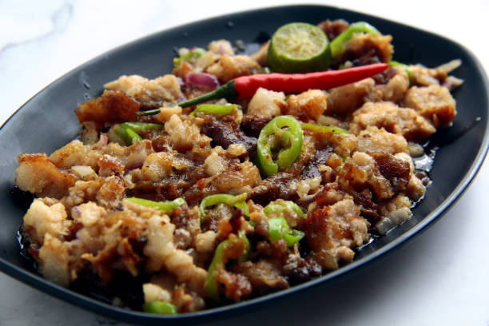

Home
Pork Adobo
Home
Pork Adobo
Pork Sisig
Description:
"Pork Sisig is a popular Filipino dish made with pork belly that is seasoned and cooked until crispy. It is typically served with a raw egg and sizzling pan, making it a delightful and interactive meal."

Ingredients
- 1 kg pork belly, cut into cubes
- 1/2 cup soy sauce
- 1/3 cup vinegar
- 1 cup water
- 1 whole garlic, minced
- 1 onion, sliced
- 2 bay leaves
- 1 teaspoon whole black peppercorns
- 1 tablespoon cooking oil
- 1 teaspoon sugar (optional)
- Salt and pepper to taste
- Cooked rice for serving
Steps
- Heat oil in a pan over medium heat.
- Sauté the garlic and onion until fragrant.
- Add the pork and cook until lightly browned.
- Pour in the soy sauce and let it simmer for about 5 minutes.
- Add the vinegar, water, bay leaves, and peppercorns.
- Bring to a boil, then lower the heat and simmer for 35–45 minutes or until the pork becomes tender.
- Add sugar if you want a slightly sweet flavor.
- Continue cooking until the sauce thickens.
- Taste and adjust seasoning if needed.
- Serve hot with steamed rice.
Trivia About Pork Sisig
Pork Sisig is a beloved Filipino dish that originated in the province of Ilocos. The name "sisig" comes from the Ilocano word meaning "mixed" or "chopped," referring to the way the meat is prepared.
The dish gained popularity in the 1960s and has since become a staple in Filipino cuisine. It is known for its unique combination of crispy pork belly, sizzling pan, and raw egg.
Pork Sisig is often enjoyed as a street food or at home, and it's a great way to use leftover pork belly."